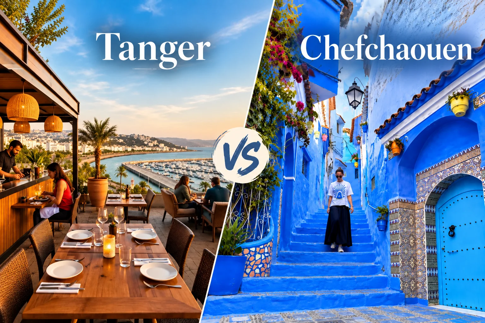

Guía más completa
Chefchaouen en 3 Días
Historia del azul andalusí, rutas en la medina al amanecer, excursión a las Cascadas de Akchour, gastronomía rifaina y dónde dormir. La guía visual más completa de la ciudad azul.
Ver el itinerario completoBed & Way · La Ciudad Azul · 2026
La medina más fotografiada de Marruecos merece más que una excursión de un día. Aquí están todas nuestras guías para descubrir la ciudad azul del Rif en profundidad.
La ciudad que pinta sus casas de azul
Fundada en 1471, Chefchaouen es una ciudad única en el mundo — sus ruelles pintadas de añil guardan siglos de historia andalusí y rifaina.
Cada año miles de viajeros llegan en excursión de un día y se marchan sin haber visto la ciudad de verdad. Estas guías están pensadas para quien quiere ir más lejos: entender el porqué del azul, caminar por la medina cuando está vacía, aventurarse en el Parque de Talassemtane y descubrir una gastronomía rifaina que apenas aparece en los guías generalistas.
Guía más completa
Historia del azul andalusí, rutas en la medina al amanecer, excursión a las Cascadas de Akchour, gastronomía rifaina y dónde dormir. La guía visual más completa de la ciudad azul.
Ver el itinerario completoTodas las guías
Todo lo que necesitas para Chefchaouen
ItinerarioHistoria del azul, medina al amanecer, Akchour, artesanía rifaina y los mejores miradores.
Leer guía Excursión
ExcursiónLas dos rutas del Rif: pozas turquesa accesibles y el espectacular arco rocoso natural.
Leer guía
Comparativa¿Solo tienes unos días? Cuál elegir, cómo combinarlas y qué esperar de cada una.
Leer guía Alojamiento
AlojamientoDars y riads de la medina azul: mosaicos, terrazas con vistas y desayunos caseros.
Leer guía Gastronomía
GastronomíaBissara, tajín de cordero, msemen y los mejores restaurantes con vistas a la plaza.
Leer guía Transporte
TransporteBus CTM, taxi compartido o coche de alquiler: tiempos, precios y la mejor opción.
Leer guíaLos mejores riads de la medina azul con cancelación gratuita
Norte de Marruecos
Combina con otras ciudades

La puerta de África a 2h en coche.
Ver guías de Tánger →
La medina blanca del Atlántico.